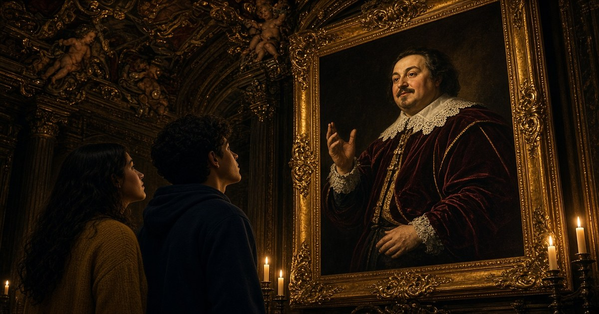

Quarta professionale · Italiano
Letteratura barocca
Seicento italiano: il poeta vuole stupire. Scheda con mappa degli autori, lezione a fumetti e un giro d’Italia.
«È del poeta il fin la meraviglia.»

Quarta professionale · Italiano
Seicento italiano: il poeta vuole stupire. Scheda con mappa degli autori, lezione a fumetti e un giro d’Italia.
«È del poeta il fin la meraviglia.»